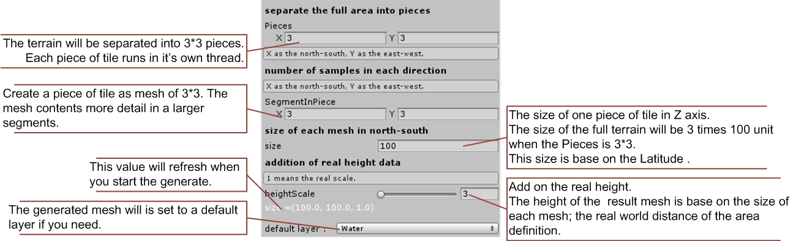

Open or create a new scene and find Real Terrain Maker on your top menu bar. The editor window will show up.
Get and fill up your API key.
The API key is required if you want to use the Google or Bing map service. Log in your Google/Bing account and enable the API.
Open the window on your top menu bar or click the setting button.
There are two modes to settle the real world location to generate a terrain.
Determine the target area with a center point and a distance of diameter.
1.Find the latitude and longitude of the target location with Google Map, and measures the distance.
Determine the target area by two points. Using the latitude and longitude of northwest /southeast location.
1. Find the latitude and longitude of northwest and southeast point.
2.Fill the geographic coordinates in the lat/lng field.
Set the Pieces and Segments of your generated terrain.

Now click the Start button and wait for the download. The time it takes depends on the size of texture and the pieces and segments you set.